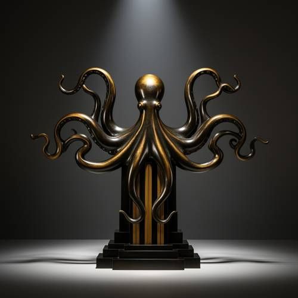
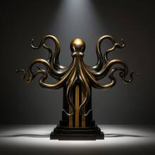
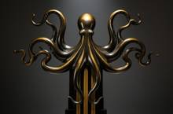

Action — Generated image: An Art Deco bronze sculpture depicting an octopus gra
Generated image: An Art Deco bronze sculpture depicting an octopus gracefully stretching its tentacles.


Judge — Direct
- PASSAction - State — The sculpture portrays an octopus with its tentacles arranged in dynamic, fluid poses. Some tentacles are raised high and curled, while others are splayed out, effectively depicting the state of 'stretching'.
- PASSWorld Knowledge — The image shows a three-dimensional statuette of an octopus mounted on a square base. The object has a metallic, brownish patina with a slight sheen, which is characteristic of a bronze sculpture.
- FAILStyle — The sculpture is rendered in a highly naturalistic and detailed style, focusing on the organic, flowing forms of the octopus. It lacks the strong geometric patterns, symmetrical designs, and stylized, streamlined forms that are hallmarks of the Art Deco style.
Judge — Continuum
- PASSAction - State — The sculpture portrays an octopus with its eight tentacles unfurled and extended outwards from its body. The tentacles are curved and posed in a dynamic way that suggests the action of stretching.
- PASSWorld Knowledge — The image features a three-dimensional object that is clearly a sculpture. The material has a metallic appearance, with a dark, patinated surface and highlights of a golden-brown color, consistent with the look of bronze.
- PASSStyle — The sculpture incorporates strong Art Deco characteristics. This is evident in the stylized, symmetrical depiction of the octopus and, most notably, in the geometric, tiered, and vertically-lined base on which the octopus is mounted.
What the agent did
Thinking
The user is asking for a generated image: "An Art Deco bronze sculpture of an octopus gracefully stretching its tentacles." This is an image generation task with an iterative improvement loop. First, I'll start by generating the image using flux2-dev as instructed. The prompt needs to be filled in with visual details: Art Deco style, bronze material, octopus, graceful tentacles, sculptural quality. I shouldn't add any names or backstory. Alright, let's generate it.
Step 1 — `generate_image`
{
"prompt": "Art Deco bronze sculpture of an octopus, gracefully stretching its tentacles outward in stylized flowing curves, polished dark bronze metal with golden patina highlights, geometric Art Deco lines and stepped geometric base, museum lighting, dramatic spotlight, elegant symmetrical composition, high detail sculptural form",
"model": "flux2-dev"
}Result img_0

Thinking
The generated image looks good. Let me check: Art Deco bronze sculpture of an octopus with tentacles gracefully spread out. Yeah — dark bronze with golden highlights, geometric stepped pedestal, Art Deco aesthetic, museum-style spotlight. This fits the prompt well. Let me zoom in to inspect the details and check for any issues. Actually, the image is already pretty solid. Let me mark it as the best first, then check the details. One thing that concerns me: the prompt says "tentacles spreading gracefully." The image shows tentacles that gracefully spread out to both sides and drape down. Good. Art Deco style — yes, there are geometric elements on the pedestal. Bronze — yes. This looks like a good result. Let me quickly check the tentacles and the texture, and make sure there aren't any artifacts.
Step 2 — `mark_best`
{
"image": "img_0",
"reason": "Art Deco bronze octopus sculpture with gracefully outstretched tentacles, geometric stepped base, and museum spotlight \u2014 matches the prompt well."
}Step 3 — `inspect_region`
{
"image": "img_0",
"roi": "the octopus head and upper tentacles",
"padding": 0.1
}Result img_1

Thinking
The cropped image shows the head and tentacles at source resolution. The bronze texture looks good — dark bronze with gold highlights. The octopus is clearly depicted, and the tentacles spread out gracefully. The head is smooth with small eyes. There are no obvious artifacts. One minor observation: the octopus's eyes look a bit weird — they seem like small round protrusions. Also, the tentacles in the center are hanging down in front of the pedestal, which reads naturally. The overall Art Deco feel comes from the geometric pedestal with its vertical gold stripes, and the composition. This image satisfies the prompt: Art Deco bronze sculpture, octopus, gracefully spread tentacles. The head/eye area is a bit stylized, but that's within the acceptable range for Art Deco stylization. I think this is good enough as a stopping condition. The marked image (img_0) is the best. Everything is in place: - Art Deco ✓ (geometric pedestal, stylized curves, museum lighting) - Bronze ✓ (dark patinated bronze with gold highlights) - Sculpture ✓ (placed on a stepped pedestal under a spotlight) - Octopus ✓ (mantle, 8+ tentacles with suckers visible) - Tentacles spread gracefully ✓ (spreading to the left and right in elegant curves) I'll stop here. The marked image is the final result, and no editing is needed afterward.
Model
The close-up confirms the sculpture holds up at full resolution: the bronze surface reads as dark patinated metal with warm golden highlights, the tentacles spread in graceful symmetrical curves with subtle sucker detailing, and the geometric stepped plinth with vertical gilded stripes gives it the Art Deco character. The small eyes on the mantle are slightly stylized, but that fits the Art Deco aesthetic rather than being a flaw. All requested elements are present: - **Art Deco** — geometric stepped base, stylized flowing lines, museum spotlight presentation - **Bronze sculpture** — polished bronze with gold patina, sculptural form on a pedestal - **Octopus** — clear mantle and multiple tentacles - **Gracefully stretching tentacles** — spread elegantly outward on both sides The image is already marked as best and no further edits are needed — stopping here.